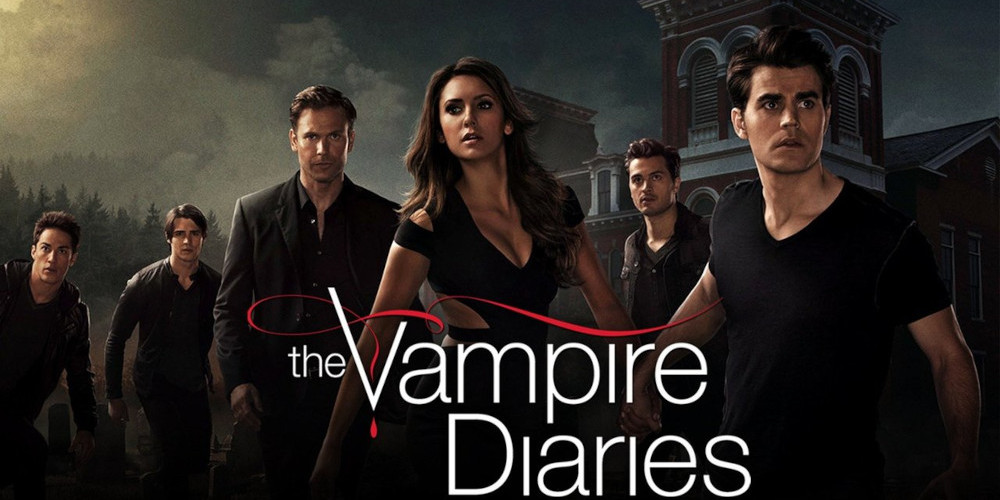

Diários de um vampiro
Elenco:
Elena Gilbert
Damon Salvatore
Stefan Salvatore
Sinopse:
(Diários de um Vampiro) narra a história de Elena Gilbert (Nina Dobrev), uma adolescente que se apaixona por Stefan Salvatore (Paul Wesley), um vampiro centenário tentando viver em paz, enquanto seu irmão perigoso, Damon Salvatore (Ian Somerhalder), retorna para causar caos em Mystic Falls, criando um intenso triângulo amoroso.
Temporada: 8
